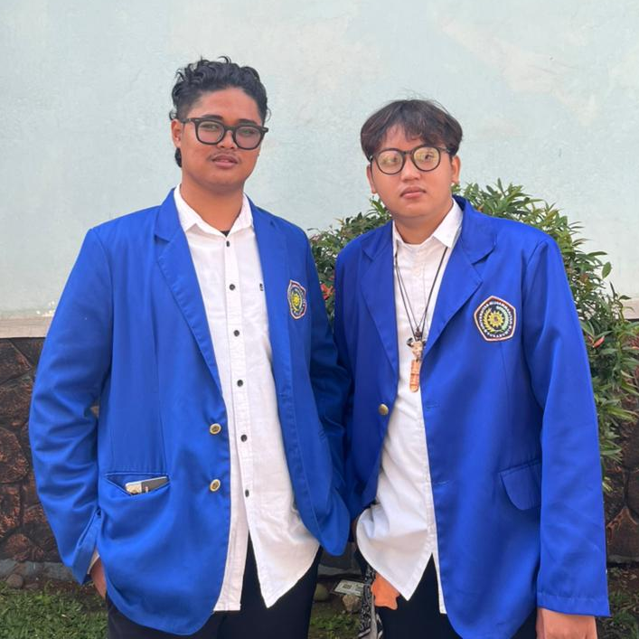
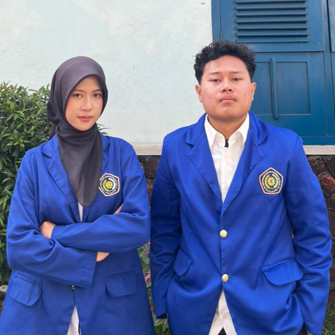

Himpunan Mahasiswa Teknik Informatika
Himpunan Mahasiswa Teknik Informatika
Silakan masukkan token akses Anda untuk melanjutkan ke bilik suara elektronik.
Baca visi misi mereka dengan saksama, lalu klik Pilih pada paslon jagoan Anda.

MOCHAMMAD JAELANI SHIDDIQ
"Mewujudkan HMIF sebagai organisasi yang nyaman, aktif, dan bermakna dalam mengembangkan potensi serta kebersamaan anggotanya."
1. Membangun budaya organisasi yang terbuka dan nyaman.
2. Meningkatkan partisipasi serta rasa memiliki anggota.
3. Menyelenggarakan program yang bermanfaat bagi pengembangan anggota.
4. Memperkuat komunikasi dan tanggung jawab pengurus.

Muthi'i Khairunnisaa
"Menjadikan HMIF sebagai organisasi yang Responsif, Inovatif, dan Kontributif dalam mengembangkan potensi mahasiswa yang Berdaya Saing Global berlandaskan asas Solidaritas dan Profesionalisme."
1. Membuka ruang komunikasi yang jujur dan terbuka untuk mendengar, mengawal, dan memperjuangkan hak serta kesejahteraan seluruh mahasiswa Informatika.
2. Membantu mahasiswa mengasah minat dan keahlian IT mereka lewat kelompok belajar (learning circle) dan program kerja yang sesuai dengan kebutuhan dunia kerja saat ini.
3. Menyelenggarakan aksi sosial dan kegiatan kemanusiaan secara nyata sebagai wujud kepedulian dan kontribusi positif mahasiswa bagi masyarakat sekitar.
4. Menjalankan roda organisasi yang transparan, jujur, dan disiplin demi menciptakan lingkungan kerja himpunan yang profesional sekaligus nyaman (harmonis).
Terima kasih telah menggunakan hak suara Anda untuk masa depan HIMA TI yang lebih cerah.